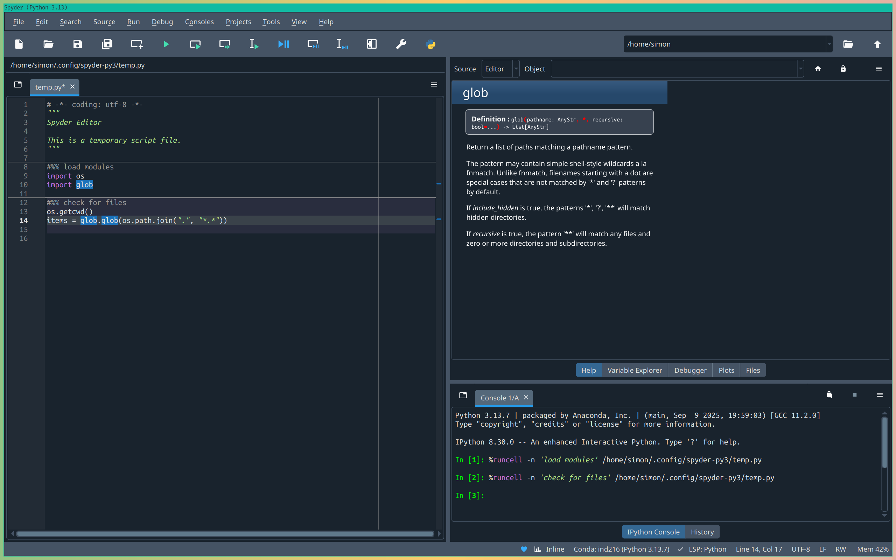
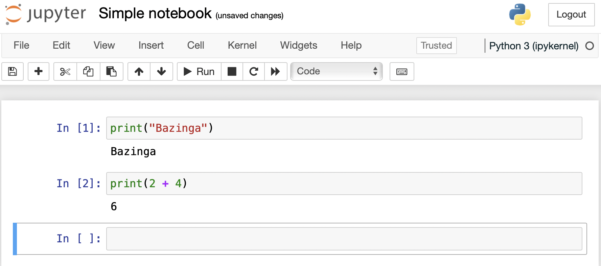
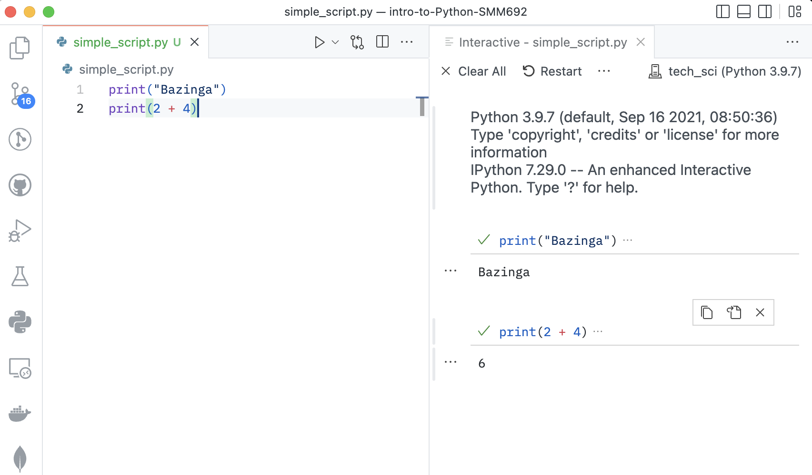
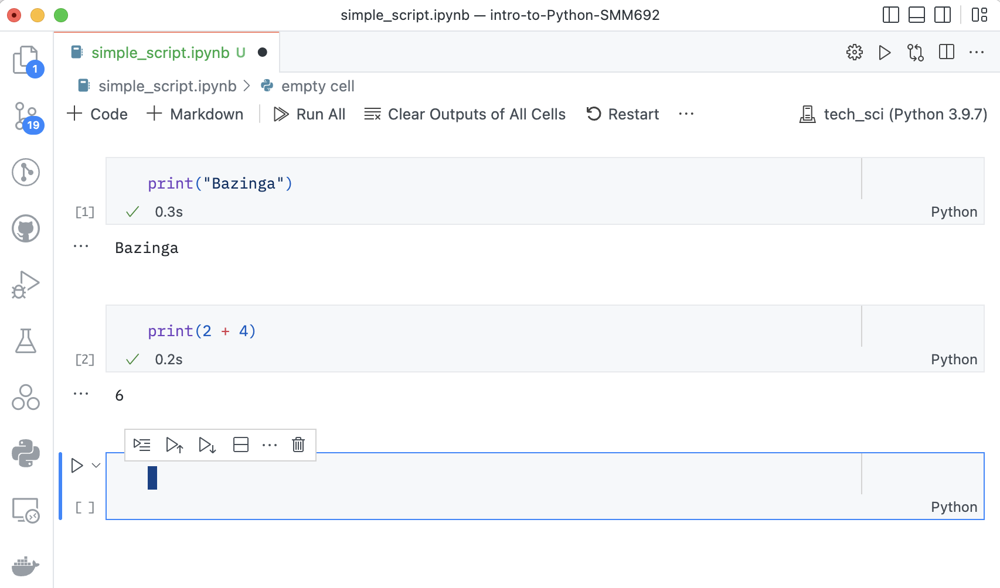

How We Run Python Programs
Now that you understand how Python runs programs internally, let’s explore the practical ways to execute Python code. There are several methods available, each suited for different scenarios and learning styles.
What Are the Alternative Ways to Run Python Code?
There are two main approaches to running Python code:
- Non-interactive way - Preparing a Python script and running it from the command line
- Interactive way - Preparing and running one or a few Python statements from within a Python shell
Let’s explore each approach in detail.
Non-Interactive Execution: Running Python Scripts
The non-interactive approach involves a two-step process:
- First, the script has to be prepared using a text editor
- Second, the script has to be executed from the shell
Creating a Python Script
A Python script can be created using: - Built-in text editor of your operating system - Advanced text editors such as: - Atom - Emacs - Vim/Neovim - Sublime Text - Visual Studio Code
Here’s a minimal Python script example:
# Print a string object
print("Bazinga")
# Print the result of an algebraic operation
print(2 + 4)Executing the Script
Once the script is saved to a file with extension .py, you can execute it from the command line:
$ python filename.pyLet’s break down this command: - The $ symbol denotes the statement has to be run in a shell session - The python command tells the shell to use the Python interpreter to evaluate the script - filename.py is the script’s file name
Important Note
The example assumes the Python script is saved in the current working directory. If the script is saved in a different directory, you have to specify the full path to the script in the command line.
$ python simple_script.py
Bazinga
6The outcome of the script is displayed in the active shell session. You’ll see the print function in action throughout your Python journey.
Interactive Execution: Python Shells
Interactive execution allows you to test code snippets quickly and experiment with Python commands in real-time.
Three Ways to Run Python Interactively
- Running a Python shell in the terminal
- Running an IPython shell in the terminal
- Interacting with a Python or IPython shell through an Integrated Development Environment (IDE)
Using Python and IPython Shells
To start an interactive session:
Open your terminal emulator of choice:
- Windows Terminal
- Cmder
- iTerm
- Terminator
- Kitty
Run one of these commands:
$ python # Start a Python shell $ ipython # Start an IPython shell (enhanced)You will be prompted into this:
Python 3.12.2 | packaged by conda-forge | (main, Feb 16 2024, 20:50:58) [GCC 12.3.0] Type 'copyright', 'credits' or 'license' for more information IPython 8.30.0 -- An enhanced Interactive Python. Type '?' for help. In [1]: print("Bazinga") Bazinga In [2]: print(2 + 4) 6
Popular Python IDEs
There are numerous Python IDEs available, each with unique features:
Cloud-Based IDEs
- Google Colab - Free, runs in browser, great for data science
- Datalore - JetBrains’ cloud-based data science platform
Desktop IDEs
- IDLE - Comes with Python installation, simple and lightweight
- Jupyter/JupyterLab - Interactive notebooks, excellent for data analysis
- PyCharm - Professional IDE with advanced features
- Spyder - Scientific Python development environment
- Thonny - Beginner-friendly Python IDE
- Wing - Professional Python IDE
- Qt Console - Enhanced console interface
Which IDE should I use?
If you are a Python newbie, Spyder and Jupyter are excellent options because they are specifically designed with beginners and data science workflows in mind.
How about Spyder?
Spyder (Scientific Python Development Environment) is particularly well-suited for Python beginners because:
- Familiar interface - Similar to MATLAB or RStudio, making it comfortable for users coming from those environments
- RStudio-like experience - If you’re already familiar with RStudio for R programming, Spyder provides a very similar layout with panels for editor, console, variable explorer, and help - making the transition to Python seamless
- Built-in help - Integrated documentation and help panels
- Variable explorer - See your variables and their values in real-time
- Integrated IPython console - Interactive Python shell built right in
- Debugging tools - Easy-to-use debugger for finding and fixing errors
- Scientific focus - Designed specifically for data analysis and scientific computing

How about Jupyter?
Absolutely! Jupyter supports novice programming learning in two important ways:
- Trial and Error Approach: The graphical interface of a Jupyter notebook allows learners to embrace a trial and error approach to coding by:
- Breaking code into manageable chunks - Dissect scripts into small, testable snippets
- Immediate feedback - See results instantly after running each cell
- Easy experimentation - Modify and re-run code without affecting other parts
- Step-by-step execution - Execute code line by line or cell by cell to understand each step
- Rich Documentation and Learning: Jupyter notebooks provide an ideal environment for learning because they combine:
- Code and explanations - Mix executable code with markdown text explanations
- Visual outputs - Display plots, charts, and rich media directly in the notebook
- Interactive learning - Create tutorials that students can follow along with
- Reproducible examples - Share complete workflows that others can run and learn from

These features make Jupyter particularly valuable for: - Learning Python concepts - Experiment with new ideas safely - Data analysis workflows - Perfect for exploring and visualizing data - Creating educational content - Ideal for tutorials and examples - Documenting your work - Combine code, results, and explanations in one place
Exercise: Try Different Execution Methods
Create a simple script:
- Save the following code as
hello_world.py:
print("Hello, Python world!") name = input("What's your name? ") print(f"Nice to meet you, {name}!")- Save the following code as
Run it from command line:
python hello_world.pyTry the same code in an interactive shell:
- Start Python:
python - Type each line and press Enter
- Exit with
exit()
- Start Python:
If available, try in Jupyter:
- Start Jupyter:
jupyter laborjupyter notebook - Create a new notebook
- Run the code in cells
- Start Jupyter:
Advanced Text Editors as Python IDEs
You can transform advanced text editors into powerful Python IDEs by installing plugins:
Popular Editor Options
- Emacs - Highly customizable, steep learning curve
- Vim/Neovim - Modal editing, very efficient once learned
- Visual Studio Code (VSCode) - Modern, user-friendly, extensive plugin ecosystem
VSCode for Python Development
VSCode is particularly popular among data scientists because it offers: - Excellent Python extension - Integrated terminal - Git integration - Debugging capabilities - Jupyter notebook support


For detailed setup instructions, refer to the official VSCode Python documentation.
Choosing the Right Method
The choice of execution method depends on your needs:
Use Scripts when:
- Building complete applications
- Automating tasks
- Sharing code with others
- Working on larger projects
Use Interactive shells when:
- Learning new concepts
- Testing small code snippets
- Debugging
- Exploring data
Use IDE like Spyder or Jupyter when:
- Doing data analysis
- Creating tutorials or documentation
- Prototyping
- Combining code with explanations
Quick Reference
# Running scripts
python script.py # Run a Python script
python -i script.py # Run script then enter interactive mode
# Interactive shells
python # Start Python shell
ipython # Start IPython shell (if installed)
exit() # Exit Python shell
# Jupyter
jupyter lab # Start Jupyter Lab
jupyter notebook # Start Jupyter NotebookSummary
You now know the main ways to execute Python code:
- Non-interactive execution using scripts and the command line
- Interactive execution using Python/IPython shells
- IDE-based execution using integrated development environments
- Notebook-based execution using Jupyter
Each method has its place in the Python developer’s toolkit. As you progress, you’ll likely use all of these methods depending on the task at hand.
Next Steps
Now that you understand how to run Python programs, let’s explore Managing Python Environments to learn how to organize your Python projects and dependencies effectively.